Mainboard
Eine Präsentation von Sebastian Schmoll, Alpha Prechtl und Alexander Tanachai Thürling
Inhalt
CPU Sockel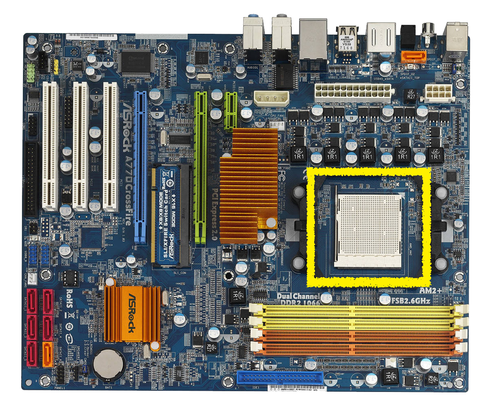
Ram Slots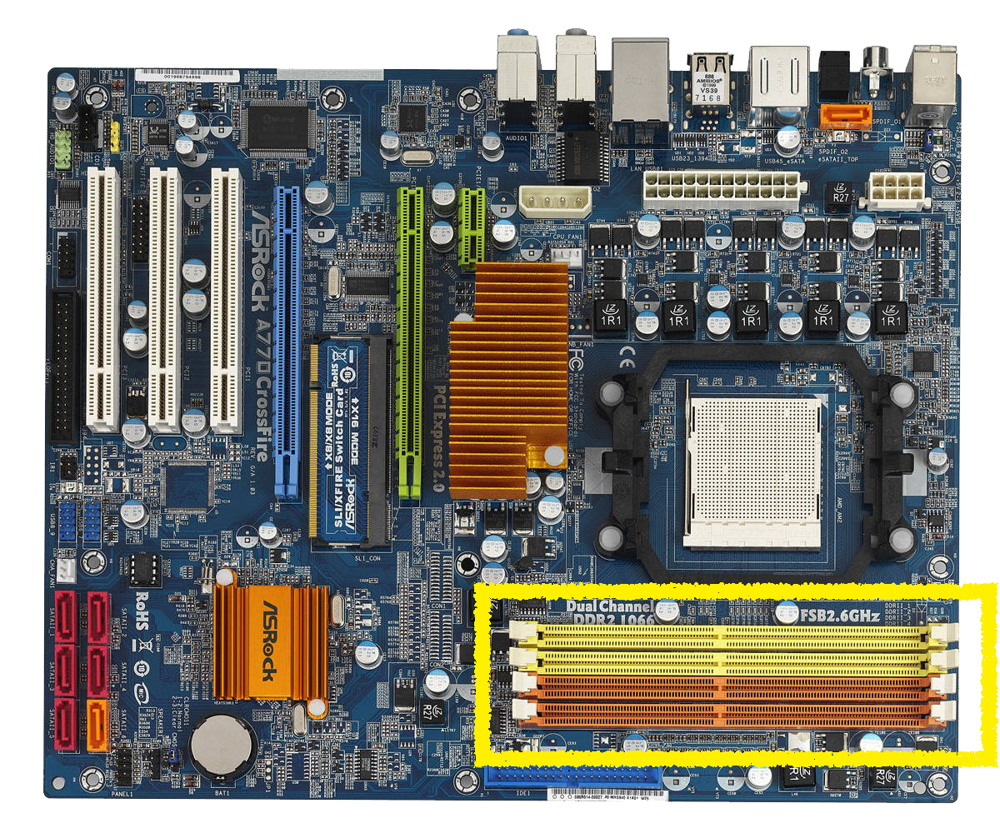
PCI / PCI-e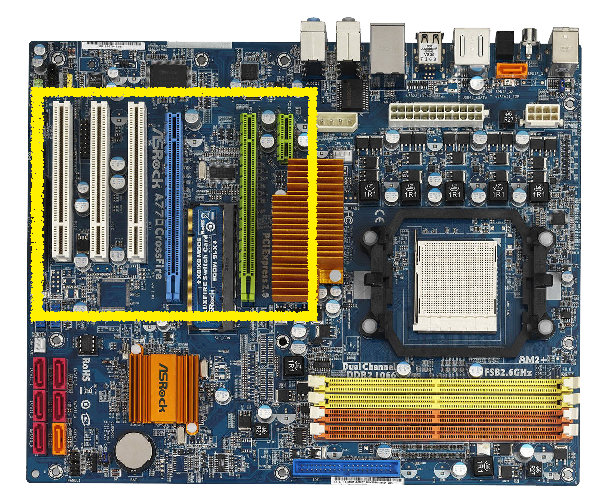
Boardanschlüsse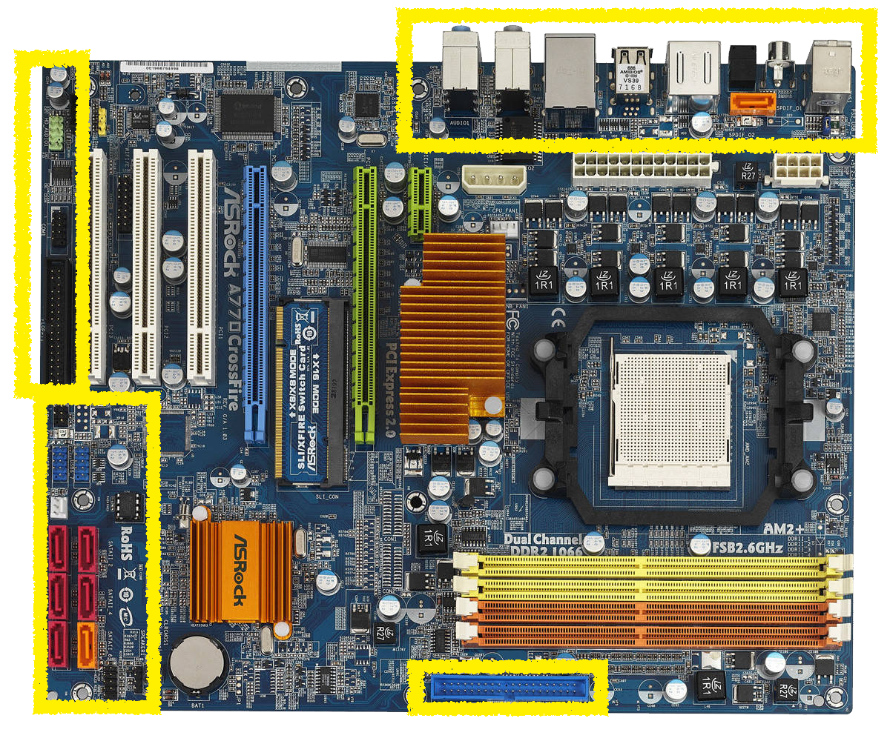
Formfaktoren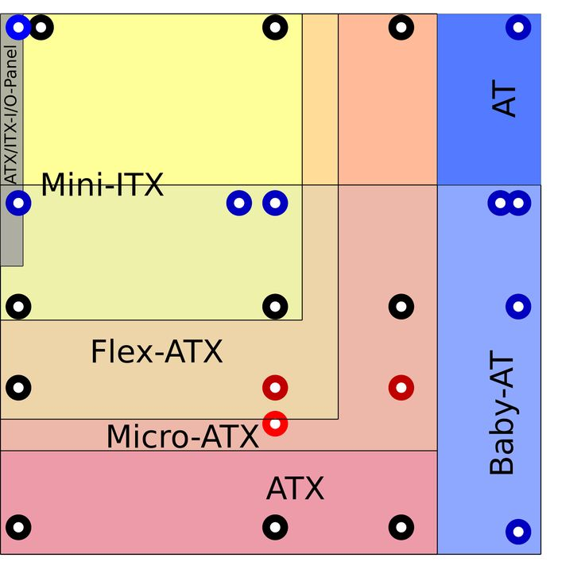
Stromanschluss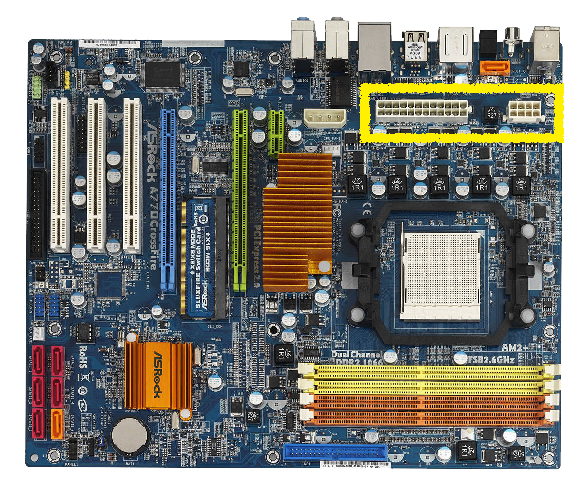
Chipset
South/North Bridge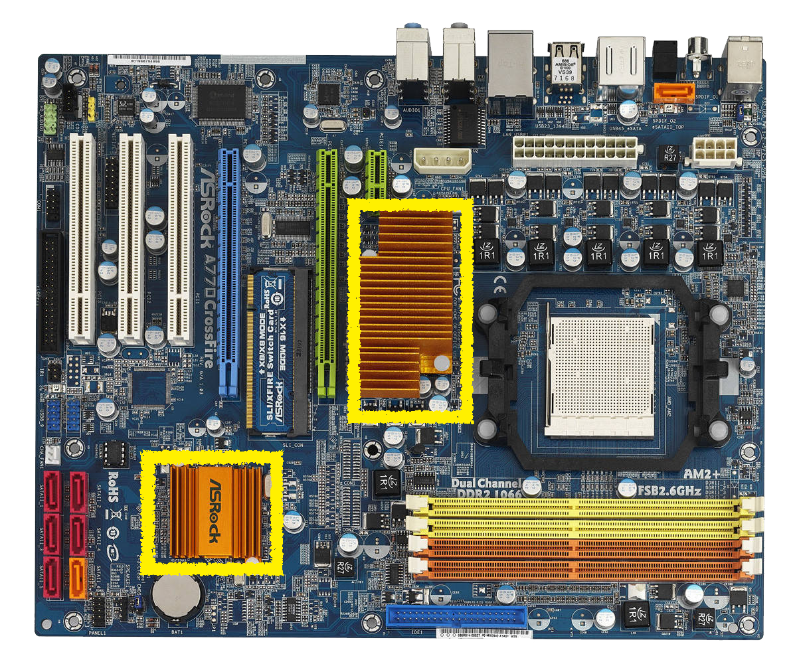
Bios/ Bios Batterie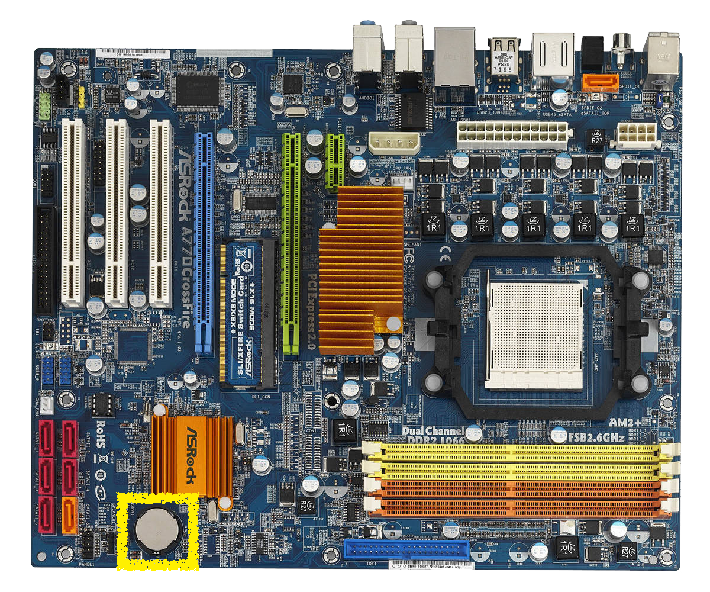
CPU Sockel
Steckplatzvorrichtung
CPU austauschbar
Stecken über
LIF(Low Insertion Force) oder ZIF(Zero Insertion Force)
PGA(Pin Grid Array) oder SPGA(Staggered Pin Grid Array)
ggf. auch BGA(Ball Grid Array)
Sockelarten
Sockel 1150 oder 1366
Sockel TR4 oder AM4
Sockelarten
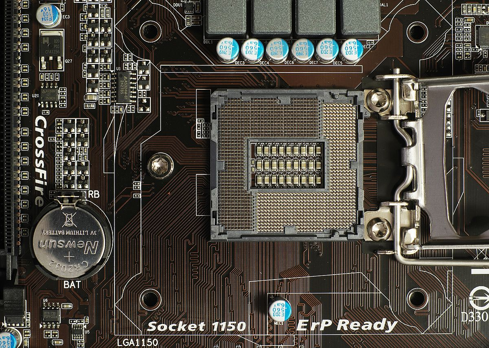RAM Slots
Steckplatzvorrichtung
RAM austauschbar
I.d.R. 2 bis 4 Slots
Verschiedene Ram-slots
DDR 1 bis 4
SDRAM
DIMM
Verschiedene Ram-slots
Dual Channel
Beispiel Anforderungen vom A770CrossFire:
- Dual Channel DDR2 memory technology
- 4 x DDR2 DIMM slots
- Supports DDR2 1066*/800/667/533 non-ECC, un-buffered memory
- Max. capacity of system memory: 16GB**
PCI-/ Express
Steckplatzvorrichtung
Peripheral Component Interconnect
Gerät/Karte austauschbar
2 bis 7 Slots
Bus-Standard für Verbindung
Peripheral Component Interconnect Express
Gerät/Karte austauschbar
2 bis 7 Slots
PCI-Bus, kein shared Bus-System
Beispiele für die PCI/-E Slots
Netzwerkkarten, Modems
Soundkarten, Grafikkarten usw.
... und Riserkarten
Boardanschlüsse
Externe Anschlüsse / Peripherieanschlüsse
PS2 / USB 2.0 und 3.0
DVI/ DP/ VGA/ HDMI
Lan und Firewire
Soundanschluss
Interne Anschlüsse
Stromanschluss (ATX)
SATA/IDE Anschluss
Lüfter
Interne Anschlüsse
Panelanschlüsse 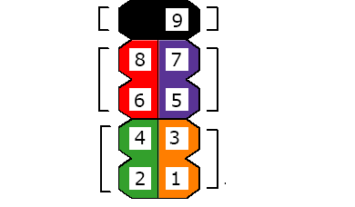
Formfaktoren
Formfaktoren
Stromanschluss
Versorgt Komponenten mit Strom
Läuft auch im Standby
Chipset
CHIPSET
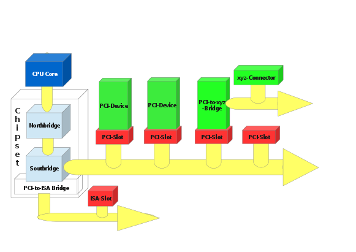
North- and Southbridge
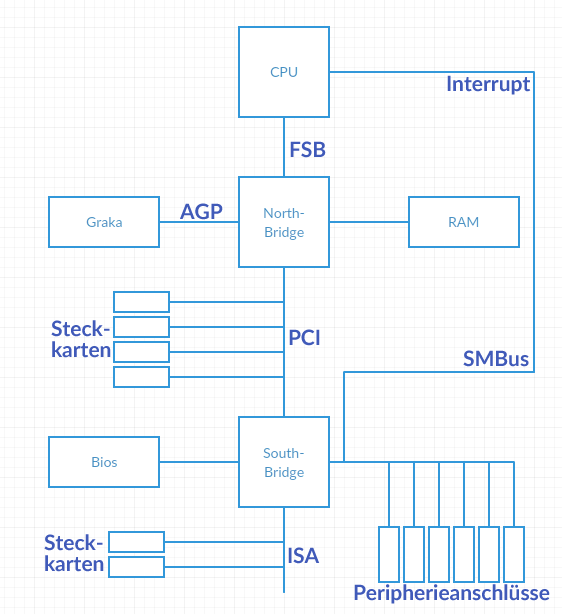
Northbridge
Zuständig für Sync von
CPU / Graka / RAM
PCI-/ Express
Southbridge
Zuständig für Sync von
Peripherie, Bios und
PCI-/ Express
Bios
Basic Input Output System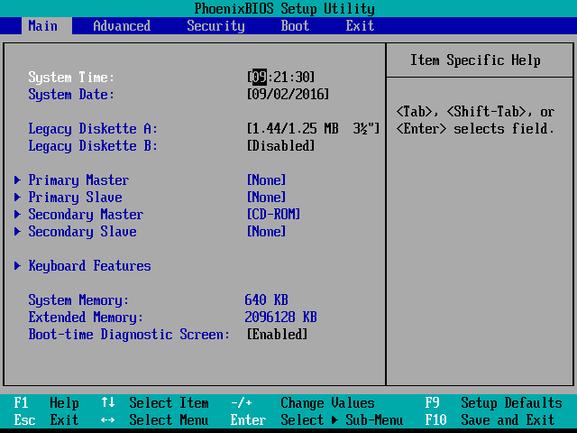
Bios übernimmt die Kommunikation zwischen Hardware auf dem Mainboard
Batterie Leer?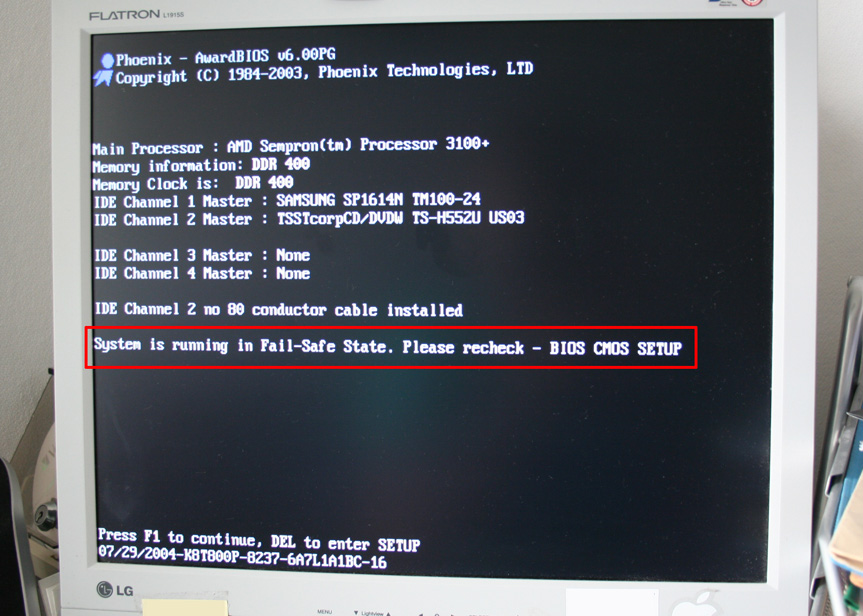
Fazit
Worauf muss ich achten?
Ende